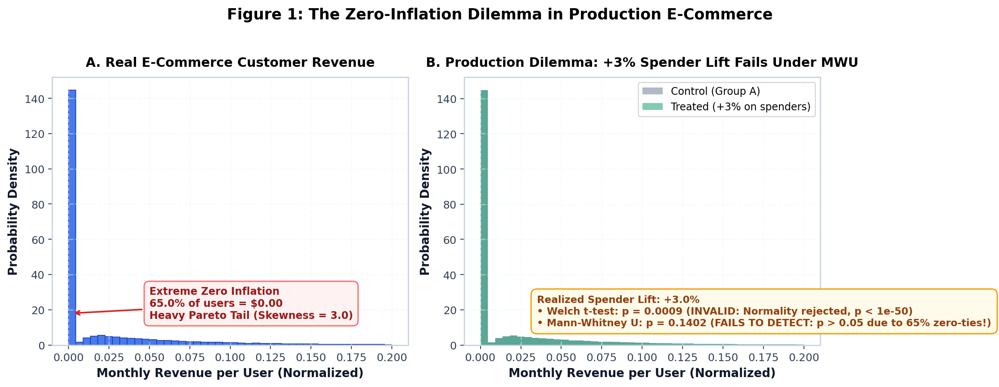

AIPI 510
E-COMMERCE INFERENCE
2026 BENCHMARK
A/B Testing on Zero-Inflated Revenue
Why Mann-Whitney U Fails on User-Level Data and How Bucketization Restores Power
Design Aesthetic
Linear / Stripe Technical Slate
Cohort Population
200,000 Customers (100k A / 100k B)
Primary Challenge
65.0% Zero Purchases & Severe Ties
Duke University · Statistical Data Analysis
Slide 1 / 11
Stage 1 · Production Dilemma
Retail Recommender Upgrade: The Zero-Inflation Trap
H0: E[RB] = E[RA]
H1: E[RB] > E[RA]

✕
65% users spend nothing.
✕
Welch assumes non-existent normality.
!
Zero-ties destroy rank tests.
→
Obvious uplift remains undetected.
Figure 1: Real E-Commerce Baseline vs. User-Level Detection Failure
Slide 2 / 11
Stage 2 · Distribution Transformation
Bucketization: Eliminating Zero-Ties via CLT
Zero Ties: 0.0%
Expectation Conserved
1. Raw Cohort
100,000 Users
65.0% zeros · skew=3.0
2. Deterministic Hash
Random Partition
hash(user_id) mod K
3. Aggregation
Sum per Bucket
0.0% zero ties
4. Inference
Gaussian CLT
Enables valid inference

✓
Aggregates eliminate zero ties.
✓
CLT restores approximate normality.
✓
Bucket sums preserve expectations.
✓
Small K enables Welch.
Figure 2: Distribution Comparison across Monotonic Bucket Counts
Slide 3 / 11
Stage 3 · Pre-Experiment Simulation
Calibrated Synthetic Treatment Injection
E[Realized Uplift] = delta
Activity Weighted
User Activity
30-Day Purchase Counts
A_i = historical volume
Activity Weight
Targeting Probabilities
w_i ∝ A_i + ε
Price Bootstrap
Empirical Catalog Items
P_j ~ Empirical Pool
Guarantee
Exact Expected Lift
E[ΔR] = δ · R_total
Why simulate treatment prior to production rollout?
Evaluating tests on historical A/A data only verifies Type I error (null calibration). To determine whether a test can reliably detect true commercial shifts, we inject synthetic purchases conditioned on realistic user behavior before live exposure.
Full mathematical derivation in Appendix A
6/6 Validation Unit Tests Passing
→
Simulate before live deployment.
→
Weight by customer activity.
→
Sample empirical item prices.
✓
Guarantees exact expected uplift.
Pre-Experiment Power Methodology · Synthetic Behavioral Perturbation
Slide 4 / 11
Stage 4 · Detection Window
P-Value vs. Number of Buckets (Target Uplift δ = +2.3%)
Optimal Zone: K ∈ [50, 1000]
Threshold: α = 0.05

✕
Under-bucketing lacks sample size.
✕
Over-bucketing restores zero-ties.
✓
K in [50, 1000] succeeds.
!
Never tune on live-data.
Figure 4: Empirical P-Value Curve under True Positive Treatment (δ = +2.3%)
Slide 5 / 11
Stage 5 · Pre-Experiment Decision Criteria
Power Curves & Significance Calibration Across K
Target Power ≥ 80%
Nominal α = 0.05

✓
Significance calibrated across all K.
✓
K=100-1000 minimizes MDE (2.26%).
✕
User-level MDE exceeds 5%.
→
Select K minimizing MDE.
Figure 5: Rejection Rate under H1 (Power) and H0 (Type I Error with 95% Wilson CIs)
Slide 6 / 11
Stage 6 · Executive Summary
Conclusion: Principles for Production Experimentation
Actionable Blueprint
The Failure Modes
- ✕ Real metrics violate textbook assumptions.
- ✕ Zero-ties destroy rank tests.
- ✕ User-level analysis misses uplift.
The Recommended Solution
- ✓ Bucketing restores statistical power.
- ✓ Pre-simulate optimal bucket count.
- ✓ Pipeline generalizes to any metric.
1
Real data violates textbook normality.
2
Zero-ties destroy rank tests.
3
Bucketing restores statistical power.
4
Pre-simulate optimal bucket count.
5
Pipeline generalizes to any metric.
Strategic Takeaways for E-Commerce Platforms
Slide 7 / 11
COMPLETE PIPELINE VALIDATED
OPEN SOURCE REPO
Thank You
"We hope that you learned from real-world scenario"
Not just a classroom exercise — this methodology equips machine learning and data science engineers with a principled blueprint to diagnose and conquer severe zero-inflation in live experimentation platforms.
github.com/vagizD/mwu_bucketing
Reproducible Simulation Suite
Q&A Session
AIPI 510 · Module Project 2
Slide 8 / 11
Appendix A · Mathematical Formulation
Mathematical Modeling of Synthetic Treatment Injection
Mathematical Rigor
1. Activity Weighting & Purchase Intensity
Let user i ∈ B have observed activity count A_i.w_i = (A_i + ε) / ∑_j (A_j + ε)
λ_i = λ_0 · w_i · N_B
where λ_0 is the base expected transaction intensity and N_B = 100,000.
K_i ~ Poisson(λ_i) = extra items purchased by user i.
2. Expectation Calibration Proof
Extra spend for user i:ΔR_i = ∑_{m=1}^{K_i} P_{i,m}, where P ~ F_empirical
Expected added revenue across Group B:
E[ΔR_B] = ∑_{i ∈ B} E[K_i] · E[P] = ∑_{i ∈ B} λ_i · P_bar
= P_bar · λ_0 · N_B
Setting λ_0 = (δ · R_B^base) / (N_B · P_bar) guarantees:
E[ΔR_B] = δ · R_B^base (Exact Expectation)
✓
Activity weighted purchase Poisson.
✓
Empirical item price bootstrap.
✓
Analytic expectation equals delta.
Appendix A: Synthetic Behavioral Treatment Mechanism
Slide 9 / 11
Appendix B · Pipeline Configuration
Hyperparameter Reference (conf.toml)
Production Config
| Hyperparameter | Benchmark Value | Section | Production Importance in Other Applications |
|---|---|---|---|
| max_users | 200,000 | [data] | Governs total test population (100k per arm); dictates statistical precision and degrees of freedom. |
| bucket_counts | [10..100000] | [buckets] | Monotonic evaluation grid; determines aggregation trade-off between CLT normality and zero-tie suppression. |
| activity_smoothing_epsilon | 0.01 | [treatment] | Laplace smoothing parameter preventing inactive (zero-activity) users from having strictly zero purchase probability. |
| uplifts (deltas) | [0.005..0.050] | [treatment] | Realistic retail effect sizes (+0.5% to +5.0%) spanning sub-MDE to easily detectable zones. |
| null_repetitions | 50 | [simulation] | Independent fresh A/B splits to verify nominal Type I error calibration (alpha = 0.05) with 95% Wilson CIs. |
| alt_repetitions | 20 | [simulation] | Independent Monte Carlo simulations per uplift grid point to estimate empirical power curves. |
| significance_level | 0.05 | [simulation] | Two-sided nominal significance threshold for rejecting the null hypothesis H0. |
| power_target | 0.80 | [simulation] | Industry benchmark power (80%) used as the horizontal intercept to determine Minimum Detectable Effect (MDE). |
Appendix B: Configuration and Sensitivity Parameters
Slide 10 / 11
Appendix C · Empirical Summary
Full Diagnostics & Estimated MDE by Aggregation Level
Optimal K = 100 - 1000
| Aggregation Level | Bucket Count (K) | Zero Share | Normality p-value | Normality Status | MWU FPR (α=0.05) | Single-Run p (δ=+2.3%) | Estimated MDE (Power=80%) |
|---|---|---|---|---|---|---|---|
| 10 Buckets | 10 | 0.0% | 0.6868 | Holds (p ≥ 0.05) | 0.040 [0.011, 0.135] | 0.0640 (Fail) | +2.70% |
| 50 Buckets | 50 | 0.0% | 0.0792 | Holds (p ≥ 0.05) | 0.060 [0.021, 0.162] | 0.0189 (Pass) | +2.50% |
| 100 Buckets | 100 | 0.0% | 0.0347 | Marginal | 0.020 [0.004, 0.105] | 0.0318 (Pass) | +2.26% (Optimal) |
| 500 Buckets | 500 | 0.0% | 0.0003 | Rejected | 0.040 [0.011, 0.135] | 0.0233 (Pass) | +2.45% |
| 1000 Buckets | 1000 | 0.0% | 0.0000 | Rejected | 0.020 [0.004, 0.105] | 0.0252 (Pass) | +2.27% (Optimal) |
| 5000 Buckets | 5000 | 0.0% | 0.0000 | Rejected | 0.040 [0.011, 0.135] | 0.0805 (Fail) | +2.85% |
| 10000 Buckets | 10000 | 0.0% | 0.0000 | Rejected | 0.020 [0.004, 0.105] | 0.1505 (Fail) | +2.73% |
| User-Level (Raw) | 100000 | 65.0% | 0.0000 | Severely Rejected | 0.040 [0.011, 0.135] | 0.9652 (Total Failure) | > +5.00% (Undetectable) |
Appendix C: Consolidated Results across Monotonic Bucket Grid
Slide 11 / 11